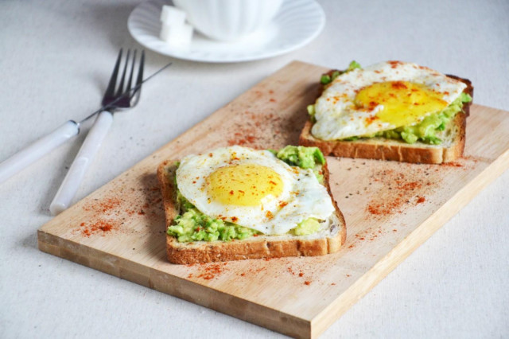
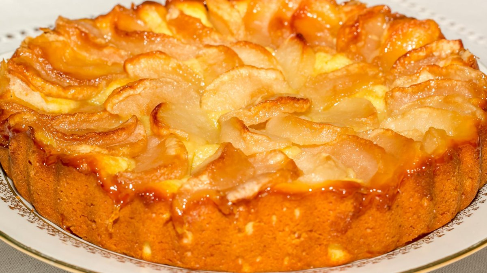

Ідеї для завтраків!
Авокадо тости)

Авокадо тости дуже смачний, та корисний завтрак!
Складові:
- Авокадо
- 2 яйця
- Тостовий хліб
- Соль, перець по смаку
Як готувати:
- Кладемо у тостер хліб (якщо немає тостеру жаремо на сковороді)
- Мнемо виделкою авокадо та додаємо сіль, перець
- Жаремо яйця
- Та зєднуємо все як на малюнку
Періг з яблук!(він готується за допомогою мультиварки)

Він займає багато часу але смак того вартий!
Складові:
- Мелена кориця 0,5 ч.л
- Борошно пшеничне 1 склянка
- Розпушувач 1 ч. л.
- Цукор 1 склянка
- Яблука 500 г
- Яйця 4 шт.
Як готувати:
- Спершу готуємо тісто. Збиваємо міксером яйця з цукром – спочатку повільно, потім пришвидшуємо для утворення пишної маси.
- Додаємо борошно, розпушувач, корицю і замішуємо тісто до густої консистенції, яка має бути схожою на сметану.
- Яблука розрізаємо на невеликі шматочки та додаємо до тіста.
- Далі потрібно підготувати мультиварку. Форму треба змастити вершковим маслом і трішки присипати цукром.
- На дно мультиварки викладаємо тонкий шар яблук. Виливаємо тісто у форму.
- Готуємо шарлотку у режимі "Випічка" 60 хвилин до повної готовності тіста.
Тут більше рецептів! ->
YouTube